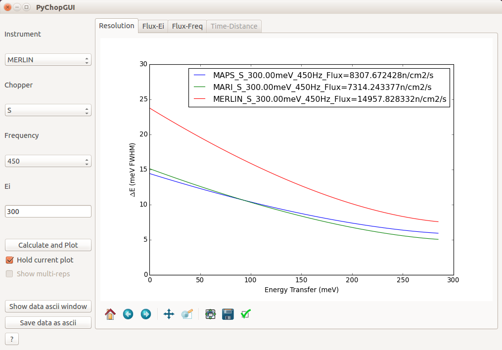
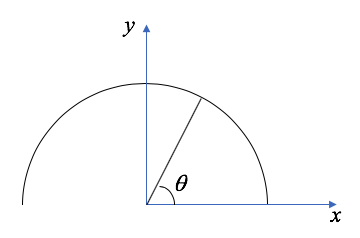

PyChop#
{kind=link}

Overview#
PyChop is a tool to allow direct inelastic neutron scattering users to estimate the inelastic resolution and incident flux for a given spectrometer setting. Currently, the four direct geometry spectrometers at ISIS (LET, MAPS, MARI, and MERLIN) and the four direct geometry spectrometers at SNS (ARCS, CNCS, HYSPEC, SEQUOIA) are supported.
Note
For SNS instruments the flux is given in n/cm2/s/MW whereas for ISIS instruments it is n/cm2/s at a nominal proton current of 160uA.
For MERLIN and LET, in addition, PyChop will also calculate the allowed Ei’s in multi-rep mode, and plot the time-distance diagrams for the desired setting.
Options#
First, the instrument, chopper slit packages (or instrument configurations for LET) and chopper frequency(ies) have to be selected from the pull-down menus (combo boxes). Then the user should enter the desired incident energy (or the Ei to focus on for multi-rep operation) in the line edit box.
Clicking the Calculate button will cause PyChop to run the resolution and flux calculations, which will take 1-2s and update the plots in the tabs on the right hand side of the GUI. Alternatively, in the options menu, the user can select the option of having the calculations run when enter (return) is pressed when the focus is on the Ei line edit box.
If the Hold current plot check box is enabled (selected) then the resolution vs energy plots will overplot the current axes.
If the Show multi-reps check box is enabled (selected) then the resolution vs energy for all allowed Ei’s will be plotted on the current axes. This only applies to LET or MERLIN with the G (gadolinium) chopper slit package.
In the Flux-Ei plot tab, there is a slider at the bottom and a line edit box to allow the user to select the maximum x-range (incident energy range) to plot. The plot updates when the slider or edit box is changed. To save computation time, the flux / elastic resolution is only calculated at twenty incident energy points from 0.1 meV to the maximum selected.
The flux and elastic resolution as a function of chopper frequency for the specified Ei is shown in the Flux-Freq plot tab. If Hold current plot is selected then several settings can be overplotted. The program will not overplot if it detects that only the frequency has changed.
If the instrument is LET (or MERLIN with the G chopper), the time-distance plot is enabled, and an additional option to change the phase of chopper 2 is available. This chopper has a wide opening and can be used to suppress low energy reps. The time delay which is specified in the chopper 2 phase edit box is the time-of-flight in microseconds relative to the moderator pulse when the chopper first opens.
If the Instrument scientist mode option is selected, a similar option is enabled for MERLIN if the G chopper is used. In this case, the phase (time delay) of the thick disk chopper can be adjusted. The time delay is the time-of- flight at which the chopper slit first opens (sweeps across the beam profile). In the event that this mode is then deselected, the time delay entered previously will be utilised for subsequent calculations instead of the default value.
The Matplotlib axes showing the calculated data have the standard toolbars.
Command line interface#
In addition to the GUI, there is also a python commandline interface to PyChop.
This is encapsulated in the Instrument class within the pychop.Instruments module. Within
Mantid, to do a single point calculation of the flux and resolution
from pychop.Instruments import Instrument
resolution, flux = Instrument.calculate(inst='maps', package='a', frequency=500, ei=600, etrans=range(0,550,50))
The parameters are in order, so Instrument.calculate('maps','a',500,600,range(0,550,50))
also works.
To further simplify the use of Instrument for data modeling, the calculate function (only) allows for
etrans=’polynomial’ parameter. If that is used, the energy transfer from -Ei to Ei with a step
of 0.01Ei is used, then fitted to a cubic polynomial. The resolutoion resturned by the function is an array
with four elements, so the desired value can be recovered using
In addition, an object orient interface is provided:
mapsres = Instrument('maps')
mapsres.setChopper('a')
mapsres.setFrequency(500)
mapsres.setEi(600)
res = mapsres.getResolution(range(0,550,50))
In particular, the method getResolution, which takes the energy transfers to
calculate the resolution for as an input, can be directly passed to third party
programs for resolution convolution purposes.
For further help, use help(Instrument) after importing the class.
Theory#
The energy resolution calculated by PyChop has contributions from the time
width of the moderator pulse \(\tau_{\mathrm{mod}}\), the opening times of the
choppers, \(\tau_{\mathrm{chop}}\), the response time of the detector,
\(\tau_{\mathrm{det}}\), and the effect of the sample, \(\tau_{\mathrm{sam}}\).
The first two contributions dominate so we will only concentrate on those.
The moderator time width is determined from fitting data above 100 meV to a \(\chi^2\) distribution [1] which has a variance \(\tau_{\mathrm{mod}}^2 =3/(\Sigma v)^2\) where \(\Sigma\) is the macroscopic scattering cross-section of the moderator and \(v\) is the neutron velocity. However, experimentally it was found that this underestimates the widths at high energy [2], so that a modified form for the variance
is used in PyChop. In future versions, the moderator lineshape will be reparameterised to use an Ikeda-Carpenter lineshape, which more accurately describes the ToF spectrum at lower neutron energies.
The chopper time width is determined from the geometry of chopper and is given by [2], [3]
where
and \(p\) is the width of the slits of the Fermi chopper, \(R\) is the radius of the chopper package (assumed cylindrical), \(\omega\) is its rotation speed, \(v\) is the neutron velocity and \(\rho\) is the curvature of Fermi chopper slits.
The time variances above are defined at the moderator and chopper positions respectively. As the neutron bunches travel towards the sample and detector they also spread out, and the final time (energy) widths are determined by the geometry (distances) of the instrument. Specifically, the relative energy width is given by the sum in quadrature of each of the contributing time widths, which we will restrict here to the two major terms, \(\tau_{\mathrm{mod}}\) and \(\tau_{\mathrm{chop}}\) [4]:
where \(t_{\mathrm{chop}}\) is the time of arrival of the neutron bunch at the Fermi (or final resolution disk) chopper, \(l_0\) is the moderator-chopper, \(l_1\) the chopper-sample and \(l_2\) the sample-detector distance. \(E_i\) and \(E_f\) are the incident and scattered neutron energies.
The flux is obtained from lookup tables of measured (white-beam) flux on each instrument.
Sample contribution#
Although the contribution of a sample to the resolution of direct-geometry chopper spectrometers is usually negligible, it is currently included by calculating of the variance of the time-of-flight due to the size of the sample. So far only two shapes are supported: plate and thin annulus. The broadening caused by a plate sample is calculated as proportional to \(\frac{1}{12} w^2\), where \(w\) is the width of the plate. The factor \(\frac{1}{12}\) comes from the variance of a uniform distribution
{kind=link}

For a thin annulus, the variation is proportional to its diameter. The fractional factor is calculated as the following variance
Here \(x= r \cos\theta = \frac{1}{2} \cos\theta\). \(\rho(x)\) is the (unnormalized) distribution function, which is proportional \(\frac{1}{\sin\theta}\). So the integration evaluates to
References#
[2] RALT-028-94: High energy magnetic excitations in hexagonal cobalt, T G Perring, Ph.D. Thesis, University of Cambridge (1991)
[4] RAL-85-052: MARS - A Multi-Angle Rotor Spectrometer for the SNS, C J Carlile, A D Taylor and W G Williams (1985)
Category: Interfaces